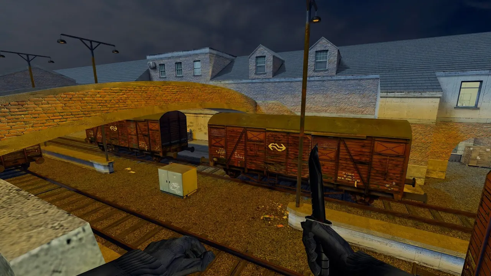
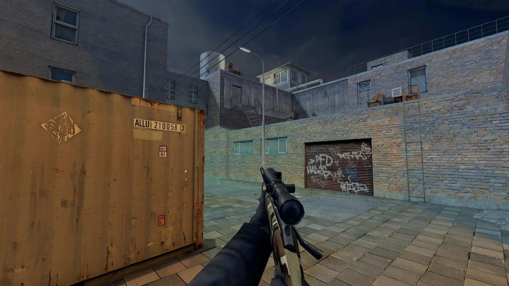
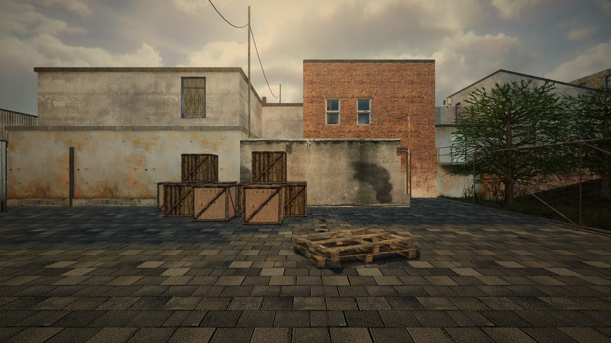

Renderer DirectX 12
Każda klatka jest renderowana w DirectX 12 we własnym oknie gry. Wygładzanie krawędzi, cienie otoczenia, HDR, bloom i wyostrzanie są opcjonalne. Starsze komputery automatycznie przechodzą na OpenGL.
 Nowy devlogGround up
Nowy devlogGround up


Klasyczna strzelanka taktyczna, odbudowana jako natywna 64-bitowa gra z rendererem DirectX 12. Oryginalne mapy, żołnierze i HUD oraz launcher, który hostuje twoje serwery i dba o aktualność gry.
Sześć oryginalnych map odbudowanych na DirectX 12, prawdziwa broń i rundy, które rozstrzyga jeden błąd. Oto TrueCombat: Platinum w ruchu.

Film jest odtwarzany z YouTube w trybie rozszerzonej prywatności. Nic nie ładuje się z YouTube, dopóki nie naciśniesz odtwarzania.
Muzyka: „Venom” – Scott Buckley, na licencji CC BY 4.0. scottbuckley.com.au
Obejrzyj na YouTube
A rebuilt interface, a new generation of light and effects, the choice between Remastered and Classic, Season 1, location pings, CQB in the core game, a brand-new map called Lockgate and a long list of changes shaped by your feedback. The full story of update 0.40.0, our biggest yet.
TrueCombat: Elite było realistyczną konwersją totalną Enemy Territory osadzoną we współczesnym konflikcie: jedno życie na rundę, prawdziwa broń i mapy zbudowane pod powolną, ostrożną grę. Wciąż działa jako 32-bitowy mod na silniku z 2003 roku.
TrueCombat: Platinum odbudowuje je jako natywną 64-bitową grę dla Windows. Renderer to nowy kod DirectX 12, HUD jest dopasowany do oryginału piksel po pikselu, a prędkości ruchu pochodzą wprost z oryginalnych wartości. Jeśli DirectX 12 sprawia kłopoty, Safe start uruchamia grę na OpenGL.

Każda klatka jest renderowana w DirectX 12 we własnym oknie gry. Wygładzanie krawędzi, cienie otoczenia, HDR, bloom i wyostrzanie są opcjonalne. Starsze komputery automatycznie przechodzą na OpenGL.
Układ, czcionki, kompas, pasek kondycji, zegar rundy i linie celów z TC:E. Sylwetka postaci zmienia kolor na żółty, pomarańczowy i czerwony, gdy otrzymujesz obrażenia.
Sprintuj z Shift, aż skończy się kondycja, wychylaj się zza rogów klawiszami Q i E, kucaj pod C i kładź się pod X. Drabiny i woda działają tak jak w TC:E, a każda prędkość zgadza się z oryginałem.
Każdy strzał trafia w strefę z własnymi obrażeniami. Gracz kucający lub leżący jest mniejszym celem.
Wszystkie 27 sztuk broni palnej, nóż i każdy granat, z oryginalnymi obrażeniami, odrzutem i rozrzutem. Pociski przebijają drzwi, ściany i skrzynie, tracąc moc na każdej powierzchni.
Launcher sprawdza na GitHubie nowe wersje, pokazuje prędkość pobierania i pozostały czas, a instaluje wyłącznie aktualizacje podpisane przez Team Terminus. Twoje ustawienia i serwery zostają zachowane.


Każdy obraz to bezpośredni zrzut z renderera DirectX 12. Bez retuszu.


Przeciągnij po obrazie, aby porównać oryginalny wygląd z nowymi ustawieniami. To samo miejsce, ta sama klatka, zachodnia bocznica Railhouse w 1440p.
Tekstury HD świata, modeli, HUD-u i menu są instalowane domyślnie. Na kartach RTX dostępne są też tryby jakości DLSS: wpisz w konsoli r_dx12Dlss 2 do 5, a potem vid_restart.

 Low
Ultra
Low
Ultra

Dwa oficjalne serwery w UE działają całą dobę: #1 Ranked, gdzie każdy mecz liczy się do rankingów, oraz #2 Unranked, na którym ruch podtrzymują boty. Każdy serwer hostowany z włączoną opcją List publicly pojawia się tutaj i w zakładce Servers w launcherze.
Zawsze możesz hostować z launchera i podać innym swój adres. Pozostali dołączają domyślnie przez port UDP 27971. Wszyscy w meczu muszą mieć tę samą wersję.
| Serwer | Mapa | Gracze | Tryb |
|---|
Wczytywanie listy serwerów na żywo. Zakładka Servers w launcherze pokazuje tę samą listę.

Ready-up, runda na noże o wybór stron, przerwa w połowie i taktyczne timeouty, które zamrażają cały mecz. Jedna komenda na dowolnym serwerze.
Tryb meczowy
Realistyczna strzelanka taktyczna zbudowana na Enemy Territory, grywalna dziś na Windows 10 i 11.
TC:E dziśKażda aktualizacja od pierwszej publicznej wersji jest na stronie aktualności (po angielsku), razem z kanałem RSS. Pliki do pobrania znajdziesz w GitHub Releases.
Przeczytaj poradnik dla początkujących: sterowanie, tryby gry i kilka wskazówek, dzięki którym pożyjesz dłużej. Strona broni zawiera każdą broń z TC:E.
Tak. Pobierz ją z GitHub Releases i graj. Każda wersja zawiera kod źródłowy oraz licencje oryginalnych plików gry.
Pobierz pakiet prasowy z logotypami, zrzutami ekranu i zestawieniem faktów.
Tak. Wybierz oficjalny serwer w UE w zakładce Servers w launcherze, rankingowy lub nie, dołącz do dowolnego innego serwera publicznego albo w kilka kliknięć hostuj własny mecz.
Tak, a nawet więcej. Każda broń, wszystkie siedem trybów gry, oryginalna prędkość ruchu, wychylanie, drabiny, pływanie, wspinanie się na krawędzie i luneta snajperska są już w grze, a do tego nowości, takie jak minimapa na żywo i kompetytywny tryb meczowy. Plan rozwoju pokazuje, co dalej.
Dołącz do Discorda TrueCombat: Platinum. To tam umawia się mecze, udostępnia serwery i jako pierwsze ogłasza nowe wersje.
Naciśnij Safe start w launcherze. Gra uruchomi się na OpenGL w oknie 1280 × 720, a jeśli DirectX 12 zawiedzie, sama też przełączy się na OpenGL.